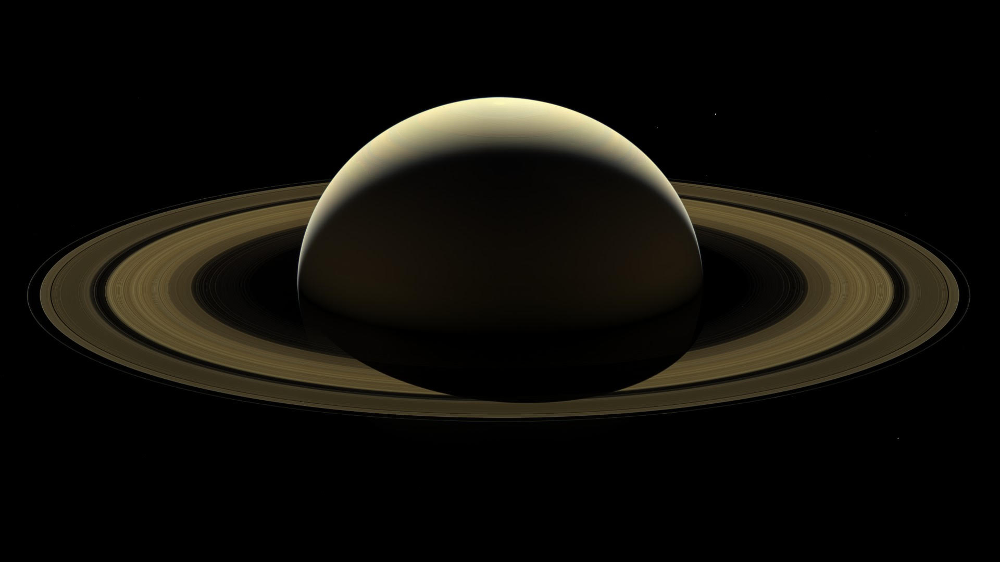
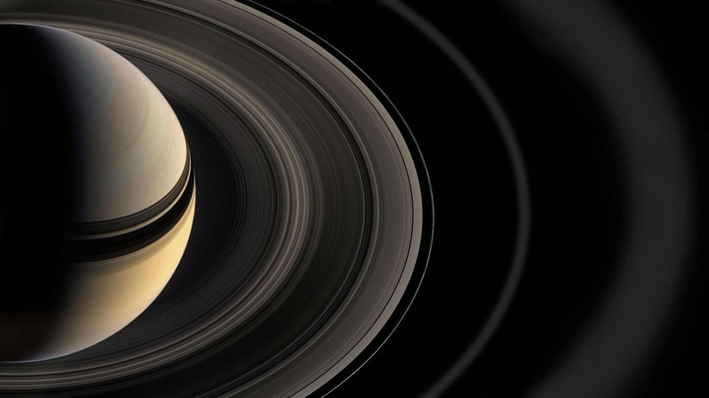

Saturn
The jewel of our Solar System - famous for its spectacular ring system

What Is Saturn?
Saturn is the sixth planet from the Sun and the second largest in our Solar System, after Jupiter. It is a gas giant - it has no solid surface. If you tried to land on it, you would just sink through layers of gas and liquid.
What makes Saturn instantly recognisable is its stunning ring system. The rings are made of billions of pieces of ice and rock, ranging from tiny grains to chunks as large as a house.
Saturn is also the least dense planet in our Solar System - less dense than water, which means it would actually float if you put it in a big enough ocean!
Saturn at a Glance
Size
Saturn is about 9 times wider than Earth. You could fit over 760 Earths inside Saturn - it is truly enormous.
A Year on Saturn
One full orbit around the Sun takes Saturn 29.5 Earth years. However, a single day on Saturn lasts only 10.7 hours - it spins very fast.
Temperature
The cloud tops on Saturn can reach about -178°C, making it an extremely cold planet.
Density
Saturn is the only planet in the Solar System that is less dense than water - it would float if you had an ocean big enough!.
Moons
Saturn has 146 known moons - more than any other planet. Its largest moon, Titan, is bigger than the planet Mercury.
Rings
Saturn's rings stretch up to 282,000 km from the planet but are only about 10 to 100 metres thick - remarkably thin for something so wide.

Saturn's Rings
Saturn has seven main ring groups, labelled A through G. The most visible are the A, B, and C rings.
The rings are made mainly of water ice, with smaller amounts of dust and rock. Scientists think they may be the remains of a comet, asteroid, or moon that broke apart long ago.
The rings are also slowly disappearing as Saturn's gravity pulls ring material inward.They could be completely gone in around 100 million years.
Famous Moons of Saturn
Titan
Saturn's largest moon. Titan has a thick atmosphere and lakes of liquid methane on its surface.
Enceladus
This icy moon sends plumes of water vapour into space and may have a liquid ocean below its surface.
Iapetus
Iapetus is known for its unusual appearance, with one side much darker than the other.
Did You Know?
Click the button below to reveal a Saturn fact.
Watch and Learn
This video helps visitors learn more about Saturn.
Keep Exploring
Head back to see all the planets or return to the home page.
Milky Way & Planets Home